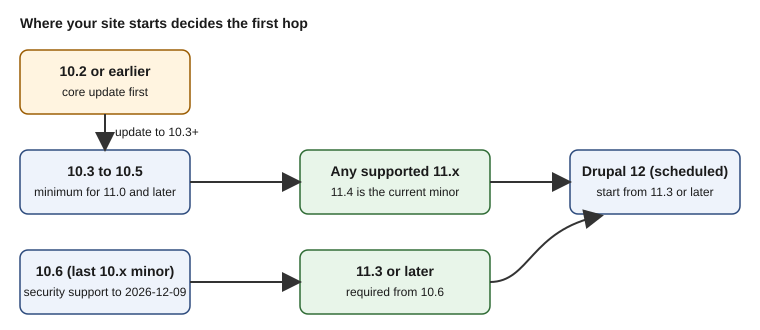

Upgrading from Drupal 10 to Drupal 11
|
This content was generated with the assistance of AI and should be verified against the official documentation before being relied on in production. |
A major upgrade is the one Drupal maintenance task that changes the ground under every module, theme and hosting setting at once. Going from Drupal 10 to Drupal 11 is, however, deliberately the smoothest major upgrade the project has produced: Drupal 10.3 and 11.0 share the same public APIs apart from a few edge cases, so most of the work happens before the Composer command that switches the core version. This page walks through the whole path: choosing the starting version, finding out what blocks the upgrade, dealing with the six core modules that no longer exist in core, checking the platform, running the Composer and database steps, and verifying and, if needed, rolling back.
It was checked on 2026-10-30 against Drupal 11.4.x (the current minor, with 11.5 and 12.0 scheduled), Drupal 10.6.x (the last Drupal 10 minor), Upgrade Status 4.3 and 5.0 (alpha), Drush 13 and 14, Composer 2 and PHP 8.3 or later. Dates written as "scheduled" are plans, not facts: Drupal 12.0.0 (planned for the week of 2026-12-07) and the end of life of Drupal 10 (2026-12-09) are still in the future on the check date. The release dates and support windows are explained in Drupal Versions, Release Cycle and Support; this page does not repeat them beyond what the upgrade decision needs.
The running example is the Meridian Museum site: Drupal 10.5 with a custom module meridian_collection, a theme
meridian, and a handful of contributed modules. The site also used two modules that no longer exist in core in
Drupal 11, Statistics (for "most viewed exhibitions") and Tour (for the editors' onboarding walkthrough), which makes it
a good illustration of the most error-prone step of the upgrade.
Why upgrade now, and to which version
Drupal 10 reaches its end of life on 2026-12-09 (scheduled). After that date it receives no security advisories. The 10.6 release notes state that 10.6.x receives security support until December 2026 and that 10.5.x support ended in June 2026, so a site on 10.5 or earlier is already outside security coverage and needs an update of the core minor as well as, or before, the major upgrade. A site should not start a new project on Drupal 10, and a Drupal 10 site that is not upgraded this year will have to move to an unsupported branch of the codebase before it can reach Drupal 12.
The target is the current Drupal 11 minor (11.4.x at the check date), not 11.0. There are three reasons:
-
only the two most recent minors receive security fixes, so 11.0, 11.1 and 11.2 are already unsupported;
-
the upgrade to Drupal 12 requires a site that is already on 11.3 or later, because the update functions of earlier releases are removed in Drupal 12 (see Preparing for Drupal 12);
-
PHP 8.4 is the recommended PHP version for Drupal 11.3 and later, and PHP 8.5 is supported from 11.3.
Each of these points leads to the same practical advice: perform the major step and then, within the same maintenance window, continue to the newest 11.x minor.
| Your site runs | You can upgrade to | Notes |
|---|---|---|
Drupal 9.x or earlier |
Not directly |
A major version cannot be skipped. Move to Drupal 10 first, then follow this page. |
Drupal 10.2 or earlier |
Drupal 10.3 or later, then Drupal 11 |
All core database updates written before 10.3.0 were removed in Drupal 11, so the site must first run them on a Drupal 10 release. |
Drupal 10.3 to 10.5 |
Any Drupal 11.x release |
10.3 is the minimum. In practice choose the newest 11.x minor. |
Drupal 10.6 |
Drupal 11.3 or later |
The 10.6 release notes say that sites on 10.6 must upgrade to 11.3.0 or higher. |
The official guide states the minimum as "Drupal 10.3.x" and warns that all core updates prior to 10.3.0 have been removed in Drupal 11. The constraint for 10.6 comes from the 10.6.0 release notes, which state that sites on 10.6 upgrading to Drupal 11 must upgrade to 11.3.0 or higher; they name no lower 11.x target.

Older material needs care. Drupal 10 Development Cookbook (2023) and Drupal 10 Masterclass (2023) were written for Drupal 10.0 to 10.1 and describe Drupal 11 as a future release; they know nothing of the 10.3 floor, the 11.3 floor from 10.6, the Composer-only code installation or the Symfony runtime front controller that appeared in 11.4. Treat any "upgrade to Drupal 11" instructions in tutorials from before mid-2024 as incomplete, and follow the official guide linked in the references.
The upgrade in one picture
The workflow below is the one used throughout the page. The order matters: everything on the left of the "switch core" step can be done on Drupal 10 with the site running, and everything after it needs a maintenance window.
Prerequisites
Before touching composer.json, make sure that all of the following hold.
-
Core is at 10.3 or later. If it is on 10.6, plan the target as 11.3 or later. Run the updates of the current minor first; a clean
drush updatedb:statuson Drupal 10 means "there are no pending database updates". -
Contributed projects are on their latest release for Drupal 10. The official preparation guide recommends keeping core and contributed modules current for the old major before upgrading, because many modules release a version that supports both majors.
-
The site is managed by Composer. Since Drupal 11.0 Composer is the only supported way to add or update code: the pages "Add new module", "Add new theme" and "Add new module or theme" (
/admin/modules/install,/admin/theme/install,/admin/reports/updates/install) were removed. A site that was ever deployed by uploading archives must first be converted to a Composer project; see Installation with Composer and DDEV and Updates, Composer and Security Advisories. -
Command-line access with Composer 2 and Drush, and the ability to change file permissions on
sites/default. -
A tested backup and a rehearsal environment. The official guide recommends doing the whole upgrade first in a local DDEV environment; Backups and Disaster Recovery explains how to take and restore the database and file backups used below.
-
A Git branch for the upgrade, so that
composer.jsonandcomposer.lockcan be reviewed and reverted. -
Configuration is exported and clean. Run
drush config:status; if the active configuration differs from the sync directory, decide which side is right before upgrading (see Configuration Management).
Meridian rehearses on a copy of production in DDEV:
# on the production host: dump the database and the public files
drush sql:dump --gzip --result-file=/backups/meridian-pre-d11.sql
tar czf /backups/meridian-files.tgz web/sites/default/files
# on the laptop: restore into DDEV and make sure it matches production
ddev start
ddev import-db --file=/backups/meridian-pre-d11.sql.gz
ddev drush config:status
ddev drush updatedb:statusPlatform requirements
Drupal 11 raises the minimum platform. Check every row on the production host, not only the development machine; the
status report at /admin/reports/status after the upgrade lists any that are not met, but by then the Composer step has
already run.
| Component | Drupal 10 | Drupal 11 | Notes |
|---|---|---|---|
PHP |
8.1 or later |
8.3 or later |
PHP 8.3 and 8.4 are supported by 11.1 to 11.4, and PHP 8.5 from 11.3. The |
MySQL |
5.7.8 |
8.0 |
InnoDB must be the primary storage engine. READ-COMMITTED is the recommended transaction isolation level. |
MariaDB |
10.3.7 |
10.6 |
Drupal 12 raises the floor again; check the Drupal 12 notes before choosing a managed version. |
PostgreSQL |
12 |
16 |
The |
SQLite |
3.26 with |
3.45 with |
Typically development only. |
Web server |
Apache 2.4.7 or later, nginx, others |
Apache 2.4.7 or later, nginx, others |
IIS support was removed in 11.0 and no |
Composer |
2.x |
2.7 or later is recommended |
Run |
Two operational notes belong with this table.
-
A managed database service may offer MySQL 8.0 or MariaDB 10.6 but the lowest version offered by an older plan may be below these floors. Upgrade the database server as a separate, earlier change and let the Drupal 10 site run on it for a while; it is a much easier fault to diagnose than a combined PHP, database and core upgrade.
-
PHP is upgraded first, on Drupal 10, to 8.3 or newer. Drupal 10.6 runs on PHP 8.1 to 8.4, so there is a window in which the site is on Drupal 10 and PHP 8.3 and the Composer platform check already agrees with the target.
The full requirement tables, including the PHP extensions list, are on the official system requirements pages (listed in the references). Where the requirements overview and the individual PHP and database pages differ, the individual pages are the more detailed source and are the ones used here. See also Requirements and Hosting.
Source: Drupal 11.0.0 release notes
Find out what blocks the upgrade with Upgrade Status
The Upgrade Status module is the central tool of the preparation phase. It must run on the current site (Drupal 10), because most deprecated APIs no longer exist once the code is on Drupal 11. It does not support skipping a major version, and it does not fix anything: it reports.
It checks:
-
whether the current core version can be upgraded and whether the hosting environment meets the next version’s requirements;
-
deprecated PHP and Twig APIs in custom and contributed code, using PHPStan with the Drupal extension;
-
deprecated
hook_themeuses, libraries, extensions and configuration keys; -
*.info.ymlandcomposer.jsonfiles, including thecore_version_requirementkey; -
the update status of contributed projects, so that projects with a release that supports Drupal 11 are flagged "update to the compatible release".
Results are sorted into errors and warnings, and into categories such as "rector fixable" and "manual review".
At the check date the 4.3.x line (4.3.10, stable, covered by the security team) supports Drupal 9 to 11, and the 5.0.0 alpha line supports Drupal 10.4 and later, 11 and 12 and improves Drupal 11.4 and 12.0 compatibility. For a Drupal 10 to 11 upgrade use the stable 4.3 line; the 5.x line is the one to use afterwards, when preparing for Drupal 12.
Installing it has one trap, which the module’s page documents: Drush pins dependencies that conflict with the development dependencies Upgrade Status needs. The recommended order is to remove Drush, add the Drupal development dependencies (so that test code in modules is analysed without false errors), require Upgrade Status, and add Drush back.
composer remove drush/drush --no-update
composer require --dev 'drupal/core-dev:^10' --update-with-all-dependencies
composer require 'drupal/upgrade_status:^4.3'
composer require drush/drush:^13
drush pm:install upgrade_status -yScan from the UI at Reports > Upgrade Status (/admin/reports/upgrade-status), or from the command line, which is the
form to use in CI:
# scan everything and write a checkstyle report for the CI server
drush upgrade_status:analyze --all --format=checkstyle > upgrade-status.xml
# scan only the Meridian projects; reuse earlier results for contrib
drush upgrade_status:analyze meridian_collection meridian meridian_events --skip-existing
# raise PHPStan's memory limit on large sites
drush us-a --all --phpstan-memory-limit=2GThe Drush command is upgrade_status:analyze (alias us-a). Useful options are --all or a list of project names,
--skip-existing, --ignore-uninstalled, --ignore-contrib, --ignore-custom, --ignore-list and --format
(plain, checkstyle XML or codeclimate JSON; the CodeClimate output feeds GitLab CI).
Source: Upgrade Status project page
The interpretation of the report follows a simple order:
-
Contributed projects marked "no compatible release". These block
composer update. Look in the project’s issue queue for a Drupal 11 patch or a dev release, use the lenient endpoint described below, or replace the project. -
Removed core modules that are enabled. See the next section; this is the step most often forgotten.
-
Custom code errors. Fix them by hand or with Rector.
-
Warnings about deprecations that will break in Drupal 12. They do not block Drupal 11, but fixing them now saves a second round of work (see Preparing for Drupal 12).
After the upgrade the module is no longer needed on production. Remove it:
drush pm:uninstall upgrade_status -y
composer remove drupal/upgrade_status --no-updateMaking custom code compatible with both majors
Custom code can declare that it works on both Drupal 10 and 11 in its *.info.yml file. This is the recommended
approach for Meridian’s module while the site is still on Drupal 10:
name: Meridian Collection
type: module
description: 'Collection objects, sync and displays for the Meridian Museum.'
package: Meridian
core_version_requirement: ^10.3 || ^11
dependencies:
- drupal:media
- drupal:viewsDo not use core_version_requirement: ^11 until the module truly no longer works on Drupal 10; a stricter constraint
makes Composer and the module installer refuse the module on the old major while you are still rehearsing.
The constraint ^10.3 || ^11 is exactly the range in which the public APIs are shared. Modules that already contain
^9 || ^10 need to be extended, and those that still list core: 8.x or core_version_requirement: ^8 || ^9 are
rejected by Drupal 10 as well.
Automated fixes with Drupal Rector
Drupal Rector applies mechanical replacements for APIs deprecated in Drupal 10 and removed in 11, and Upgrade Status
labels the problems that it can fix as "rector fixable". Run it against custom code only and review the diff; do not run
it over vendor or contributed projects.
composer require --dev palantirnet/drupal-rector
cp vendor/palantirnet/drupal-rector/rector.php .
vendor/bin/rector process web/modules/custom --dry-run
vendor/bin/rector process web/modules/customThe set of rules available is tied to the Rector release, so read the project’s own documentation for the exact
configuration of the version that you install. The coding-standards and static-analysis toolchain that should run after
the changes is described in Coding Standards and Static
Analysis. Replacements that Rector cannot make, such as moving from hook_module_implements_alter to the hook ordering
attributes, are covered in Hooks and Object-Oriented Hooks and
Plugin API and Attributes.
Contributed projects without a Drupal 11 release
When Composer or Upgrade Status reports that a contributed project has no release supporting Drupal 11, there are four options, in order of preference.
-
Update to a newer release of the project. Often the Drupal 11 compatible release is a new minor or major version of the project: pin it while still on Drupal 10, for example
composer require drupal/webform:^6.2 --no-update. -
Look in the project’s issue queue for a Drupal 11 compatibility issue. Maintainers often attach a patch or a merge request. Apply it with a Composer patches plugin until a release is made.
-
Allow both majors in the project’s constraint if the project is yours. For a module that you maintain, the form is
"drupal/linkit": "^6.1 || ^7.0"in therequireof your project, so that Composer can use the release that matches the installed core. -
The lenient endpoint. The Drupal Lenient Composer endpoint rewrites the compatibility metadata of projects whose code works on Drupal 11 but whose
*.info.ymlhas not been updated. It is a stop gap for the time between the upgrade and a real release; do not use it for projects that actually call removed APIs, because the result is a fatal error at runtime rather than a refusal at install time. Read the endpoint’s own instructions before enabling it.
If a project is abandoned, the replacement is a normal content-modelling decision: see Removed Core Modules and Their Replacements for the replacements of core features and the project pages for contributed ones.
The six core modules that left core in 11.0
Drupal 11.0 removed deprecated code, including entire modules. The release notes list six modules that moved from core to contributed projects, after being deprecated in Drupal 10:
| Core module | Deprecated in | Contrib project | What a site loses if it is not installed first |
|---|---|---|---|
Actions UI |
10.3 |
The administration page for configuring actions at |
|
Activity Tracker |
10.1 |
The "Activity" listing of recent posts and comments, and the |
|
Book |
10 |
Book outlines, the Book navigation block and the |
|
Forum |
10 |
The forum containers, forums and topics and the |
|
Statistics |
10 |
Node view counters and the "Popular content" block. |
|
Tour |
10 |
The tours that guide editors through administration pages, and tour configuration entities. |
The deprecated and obsolete modules page of the Drupal documentation is the authoritative list of the contributed projects and of their status per core version. At the check date it also lists the extensions removed earlier, in Drupal 10: Aggregator, Color, HAL, Quick Edit and RDF (modules) and Bartik, Seven, Classy and Stable (themes), plus the CKEditor 4 module. Those are relevant here only for sites that have been carrying the contributed versions since Drupal 10; the list for Drupal 12 is in Preparing for Drupal 12. The functional comparison of each module with the alternatives built from core features (Views for a listing, taxonomy and menus for structured content, Navigation and so on) is the topic of Removed Core Modules and Their Replacements.
The rule: install the contrib version first, and never uninstall
The official guide gives two acceptable ways to deal with a removed module that the site uses: stop using it on Drupal 10 before the upgrade, or replace the core module with the contributed version on Drupal 10.3 or later. The second option is the one that preserves data, and it comes with a rule that is easy to get wrong:
Do not uninstall the module. Uninstalling a module deletes its configuration and, for modules that own database tables
(forum, book, statistics, tracker), its stored data. The contributed project has the same machine name as the core
module, so Composer can put the contributed code in place while the module stays enabled: from Drupal’s point of view
nothing changed.
Why this works is a matter of how Drupal tracks extensions. The list of installed modules lives in
core.extension configuration. The module’s machine name is the key, not the path it is loaded from. If the code for
statistics is in core/modules/statistics on Drupal 10 and in modules/contrib/statistics after the contrib
project is installed, the entry in core.extension stays valid. The module’s schema version in the key_value table
(system.schema) also stays the same, so no install hooks run again.
If the code is not there when Drupal 11 boots, the opposite happens. The core.extension entry points at a module that
cannot be found, and the module system reports it as missing. The consequences, depending on the module, are a
The following module is missing from the file system message, a white screen during the bootstrap of a page that needs
the module’s services, or a database update that stops with an error. Drush may also skip the warnings that
update.php shows for missing modules or themes, so the status report after the upgrade is the place where the missing
module errors appear.
The procedure for each removed module that is installed on the Meridian site:
# 1. Which of the removed modules are enabled?
drush pm:list --status=enabled --format=list | grep -E '^(action|tracker|book|forum|statistics|tour)$'
# 2. Still on Drupal 10.3 or later: add the contrib versions to composer.json
composer require drupal/statistics drupal/tour
# 3. Check that the module is still enabled and nothing is pending
drush pm:list --filter=statistics --format=table
drush updatedb:status
# 4. Export configuration so the change is visible in Git
drush config:export -y
git add composer.json composer.lock config/sync
git commit -m "Install contrib versions of Statistics and Tour before the Drupal 11 upgrade"Step 2 installs code only. It must not be followed by drush pm:uninstall, and a configuration import that removes the
module from core.extension has the same destructive effect, so compare core.extension before and after.
Several of the contributed projects document specific behaviour that matters for the upgrade.
-
Statistics. The contributed project supplies its own
.htaccessprotection for the file that records views (statistics.php). Drupal 11’s default.htaccessno longer contains the Statistics rules, and site owners should remove the redundant rule from their own copy of the file, if it was customised. If the only purpose of Statistics was "most viewed content", consider a different popularity source in Views as a longer-term replacement. -
Tour. Shepherd.js was removed from core because only Tour used it, so the contributed Tour project carries its own front-end code. Test the editors' walkthrough on the rehearsal copy.
-
Book and Forum. Both create data structures (a book outline table, forum taxonomy and fields). Neither can be regenerated by reinstalling, which is why uninstalling them is so destructive.
-
Actions UI. The contributed project only provides the administration form; the action plugins themselves remain in core. A site that did not create custom actions through the UI can ignore it.
-
Activity Tracker. The page on deprecated modules lists the contributed project as compatible with Drupal 10 and 11.
If a project cannot be kept (for example, no Drupal 11 release exists yet), decide on the replacement before the upgrade and migrate the content on Drupal 10, where the old module is still available. Once the site is on Drupal 11 with a missing module, the content is still in the database but there is no supported way to read it other than going back to the backup.
Source: Drupal 11.0.0 release notes
Other changes in Drupal 11 that affect the upgrade
Besides the removed modules, a handful of changes in Drupal 11.0 and the minors that followed should be checked against the site.
-
Composer-only code management. The three "Add new …" pages were removed in 11.0, and updating core from the administration interface was removed in 11.2. Anything that relied on them (a deployment procedure written for editors, for instance) needs a replacement; see Automatic Updates and Project Browser.
-
Symfony 7 and newer libraries. Drupal 11.0 moved to Symfony 7.1, Twig 3.9, CKEditor 5 version 42, jQuery 4 beta and jQuery UI 1.14 beta; later minors move further (Symfony 7.4 in 11.3). Custom code that extends Symfony classes or Twig extensions must be checked against their deprecation lists. jQuery Form is forked into core and tagged
@internal; contributed and custom code should not call it directly. -
PHPUnit. Drupal 11.0 moved test dependencies from PHPUnit 9.5 to 10.5, 11.2 supports PHPUnit 11 and attributes, and 11.3 dropped PHPUnit 10. Annotation-based tests still run but produce deprecations; convert them to attributes. See Automated Testing.
-
Doctrine annotations. The
doctrine/annotationspackage is abandoned upstream. Plugin discovery by annotation still works on Drupal 11 but is on a deprecation path, and core forks the parts that it still needs. Use PHP attributes in new code (see Plugin API and Attributes). -
Object-oriented hooks. Since 11.1 hooks may be implemented as
#[Hook]methods on autowired classes, with ordering and replacement attributes in 11.2 and theme support in 11.3. The upgrade does not require converting, because procedural hooks continue to work;#[LegacyHook]keeps code compatible with Drupal 10. -
Windows and IIS. Production hosting on IIS ended in 11.0 and Windows production hosting is deprecated since 11.3.
-
HTMX headers. From 11.3, reverse proxies and CDNs must pass the
HX-RequestandHX-Redirectheaders; see Ajax and HTMX. -
Symfony Runtime (11.4). The front controller uses the Symfony Runtime component. Existing custom front controllers continue to work until at least Drupal 12. On 11.4 and later Composer must allow the
symfony/runtimeplugin, as shown in the steps below. -
Standard profile (11.4). New installs of the Standard profile no longer create the Article and Page content types. Existing sites keep theirs, because the types are configuration in the database.
-
drupal/legacy-project(11.4). This Composer template is abandoned; usedrupal/recommended-project. -
drupal/core-recommended(11.4). It no longer pins Guzzle, Twig or the Symfony polyfills, so security updates to those can be applied without waiting for a core release. -
Stable 9 and other deprecations. Contact, Field Layout, History, Migrate Drupal, Migrate Drupal UI and Telephone were deprecated in 11.4 for removal to contrib in Drupal 12, and Stable 9 is deprecated as well. They are not blockers for Drupal 11 but belong on the Drupal 12 list.
-
Development tooling. The core development tooling moved to Yarn 4 and Node.js 20 or later. This matters only to sites that build core assets, not to ordinary projects; the theme tooling is covered in Front-End Tooling.
Running the upgrade
With the site prepared, the upgrade itself is a short sequence. The guide that this section follows is the official
"How to upgrade from Drupal 10 to Drupal 11"; the commands are shown with the Meridian layout (web/ as the document
root, config/sync for configuration).
Step 0: maintenance mode and a fresh backup
Take the database and file backups again immediately before the change (the nightly one is not good enough if content was edited since), then put the site in maintenance mode when the rehearsal is done and the real upgrade starts.
drush sql:dump --gzip --result-file=/backups/meridian-$(date +%Y%m%d-%H%M).sql
drush state:set system.maintenance_mode 1 --input-format=integer
drush cache:rebuildStep 1: make the scaffold files writable
The scaffold plugin rewrites files such as .htaccess, index.php and robots.txt. Core files, including .htaccess,
change between majors, so first record which scaffold files the project customised and how they are overridden (see
the drupal-scaffold section of composer.json and file-mapping) so they can be reapplied.
chmod u+w web/sites/default
chmod u+w web/sites/default/*settings.php
chmod u+w web/sites/default/*services.ymlStep 2: change the requirements
Require the Drupal 11 versions of the core packages with --no-update, so that Composer edits composer.json but does
not resolve yet:
composer require 'drupal/core-recommended:^11' \
'drupal/core-composer-scaffold:^11' \
'drupal/core-project-message:^11' --no-update
# only on 11.4 and later: allow the Symfony runtime plugin
composer config allow-plugins.symfony/runtime true
# if composer.json lists drupal/core directly, it must go
composer remove drupal/core --no-update
# Drush 13 supports Drupal 10.2+ and 11; Drush 14 supports 11.3+ and 12
composer require 'drush/drush:^13' --no-update
# optional: development dependencies
composer require 'drupal/core-dev:^11' --dev --no-updateIf Composer cannot resolve a dependency, narrow the constraint, for example drupal/core-recommended:^11.4 instead of
^11. A constraint such as ^11.4 is a legitimate choice when the project has already been prepared for the newest
minor.
Pin the target explicitly when rehearsing. If the site starts on 10.6, ^11.3 or higher is the correct lower bound, so
use ^11.4 for Meridian.
Step 3: dry run, then update
composer update --dry-run
composer updateTo limit the change to core and Drush, name them explicitly:
composer update 'drupal/core-*' drush/drush --with-all-dependenciesThe dry run prints which packages Composer would install, update or remove, which is the cheapest way to spot a
contributed module that is about to be downgraded or dropped. Read it as a checklist: every drupal/* project should
move to a release that supports Drupal 11, and no contrib project of the removed-module list should be missing.
Step 4: verify the lock file and update the database
composer install
drush updatedb:status
drush updatedbdrush updatedb (alias updb) runs pending hook_update_N functions and post-update functions. Run drush updb -y
only after reading the updatedb:status list. Drush may skip the warnings that update.php would show about missing
modules or themes, so also open the status report (drush core:requirements or /admin/reports/status) once the update
is done. Then export the configuration that the update changed:
drush cache:rebuild
drush config:export -y
git diff --stat config/syncFor a deployment that follows the recommended pattern, drush deploy runs updatedb, config:import, cache:rebuild
and the deploy hooks in one command; see Drush and
Deployment and CI/CD. The update functions of contributed and custom modules
are described in The Update API and Post-Update Functions.
Step 5: restore permissions and leave maintenance mode
chmod 755 web/sites/default
chmod 644 web/sites/default/*settings.php
chmod 644 web/sites/default/*services.yml
drush state:set system.maintenance_mode 0 --input-format=integer
drush cache:rebuildOn the server, secure file permissions and ownership; this also resolves errors of the kind "Server unable to read
htaccess file". Deployments then proceed in the normal way: commit composer.json, composer.lock and the exported
configuration, deploy the artifact and run the database update.
A complete composer.json for the target state
After the sequence above, the relevant part of the Meridian project looks like this. The versions are those of the
check date; the contributed constraints are examples to be replaced by whatever composer why-not and Upgrade Status
say for the real site.
{
"name": "meridian/museum-site",
"type": "project",
"require": {
"php": ">=8.3",
"composer/installers": "^2.3",
"drupal/core-composer-scaffold": "^11.4",
"drupal/core-project-message": "^11.4",
"drupal/core-recommended": "^11.4",
"drupal/statistics": "^1.0",
"drupal/tour": "^1.0",
"drush/drush": "^13"
},
"require-dev": {
"drupal/core-dev": "^11.4"
},
"config": {
"allow-plugins": {
"composer/installers": true,
"drupal/core-composer-scaffold": true,
"drupal/core-project-message": true,
"dealerdirect/phpcodesniffer-composer-installer": true,
"php-http/discovery": true,
"phpstan/extension-installer": true,
"symfony/runtime": true
},
"sort-packages": true
},
"extra": {
"drupal-scaffold": {
"locations": {
"web-root": "web/"
}
},
"installer-paths": {
"web/core": ["type:drupal-core"],
"web/modules/contrib/{$name}": ["type:drupal-module"],
"web/themes/contrib/{$name}": ["type:drupal-theme"]
}
}
}The contrib constraints of the two restored modules (drupal/statistics, drupal/tour) are shown with ^1.0 as a
placeholder; use the release series that Composer chooses on the project pages. The config.platform setting, when
present, must be removed or raised to PHP 8.3, or Composer will keep resolving for the old PHP version.
The file shows only the parts that change during the upgrade; the full layout is that of the drupal/recommended-project
template of the release being installed.
Rolling back and troubleshooting
A major upgrade is only as safe as the restore procedure. Before the first Composer command, know how to return to the
starting point. The database update step is not reversible: there is no downgrade path for the schema, so the rollback is
a restore of the code (git checkout of composer.json and composer.lock followed by composer install) and of the
database backup taken in step 0. Do both, never only one of them.
The most common failures, and where to look:
| Symptom | Likely cause | What to do |
|---|---|---|
|
A contributed or custom package constrains |
Run |
A module is reported as "missing" after the update |
A removed core module was enabled and its contrib project was not required. |
Restore the backup. Install the contrib project on Drupal 10 as described above and repeat. Do not uninstall the module as a shortcut. |
Composer refuses the PHP version |
The production PHP is older than 8.3, or |
Upgrade PHP first; correct or remove the platform pin. |
White screen after the update |
An error thrown during the bootstrap, usually from custom code that calls removed APIs or from a front controller. |
Read the web server and PHP logs. Run |
"Lock file out of sync" |
|
Delete |
A patch no longer applies |
The patch was merged into core, or the code around it changed. |
Check whether the fix was merged into Drupal 11, find a patch for the new version, or drop the patch. |
|
The module’s update function is written for a newer release than the one installed, or relies on removed APIs. |
Update that module to its latest release first. Check its issue queue for the error. |
Pages work but the status report lists missing extensions |
|
Fix the report: re-add the missing module code and rerun the status check. |
After the upgrade
The first hour after updatedb is the time to catch errors.
-
Open
/admin/reports/status. The page must show no errors; warnings about missing modules are the main signal that the previous section’s rule was broken. -
Read the log:
drush watchdog:tailduring a click-through of the main pages, anddrush watchdog:show --severity=Errorafterwards. See Logging, the Status Report and Troubleshooting. -
Run
drush cronand check that scheduled tasks and queue workers still run (Cron, Queues and Maintenance). -
Run the automated tests, in the order unit, kernel, functional (PHPUnit) and any browser tests, and the coding standards checks, which were updated for Drupal 11.
-
Review the diff of the exported configuration. Updates change some default configuration shipped by core; commit the changes consciously instead of leaving them in the active configuration.
-
Re-apply scaffold customisations (
robots.txt,.htaccess) and, if the file was customised, add theDisallow: /search?rule on 11.4 and later so search result pages with query parameters are not crawled. -
Remove Upgrade Status and any one-time tooling.
-
For sites with a Drupal 7 history, note that Migrate Drupal and Migrate Drupal UI are deprecated since 11.4 and are removed without a contrib replacement in Drupal 12, so any Drupal 7 migration must finish on Drupal 11 (see Migrating from Drupal 7 and the general Migrate API page).
If the upgrade used migration tables or left orphaned configuration (for example the blocks of a theme that was uninstalled), the official "After the upgrade" page recommends deleting the migration tables only when sure no further diagnosis is needed, and removing orphaned configuration that could block configuration imports on production.
Source: After the upgrade
Security and risk
A major upgrade is also a security operation, so a few points are worth stating in isolation.
-
Do it before the end of life. After 2026-12-09 there will be no security advisories for Drupal 10. A site that waits will be running unfixable code. Drupal 12.0.0 is scheduled for the same week.
-
Keep the site private while it is being changed. Maintenance mode, a firewall rule or basic authentication in front of staging protect half-updated code from visitors and crawlers.
-
Do not leave tooling installed. Upgrade Status, Rector and
core-devneed development dependencies. Install them with--devand deploy withcomposer install --no-dev, so scanners and test frameworks are not on production. -
Keep secrets out of the commit. The upgrade touches
settings.phpandservices.ymlonly through permissions. Database credentials, thehash_saltand API keys stay in the environment or in a file outside the repository; the settings are covered in settings.php and Environments. -
Check the security defaults that changed. Registration is limited to administrators on new installs since 11.1, and the
/user/logoutroute is CSRF-protected since 10.3. Existing sites keep their settings, so review them by hand; see Security Hardening.
Common mistakes
-
Uninstalling Statistics, Book, Forum, Tour, Activity Tracker or Actions UI to "make the upgrade pass". It deletes data and configuration that the contributed versions would have preserved.
-
Upgrading core and PHP in a single step, so that a failure cannot be attributed to either.
-
Running the upgrade on production first and learning of a missing contributed release at the Composer step.
-
Leaving
drupal/coreanddrupal/core-recommendedboth incomposer.json; only the second one belongs there. -
Using
core_version_requirement: ^11for modules that must also run on Drupal 10 during the rehearsal. -
Following a tutorial that tells the reader to upload modules through the administration interface, or to update core there; neither exists in Drupal 11.
-
Choosing 11.0 or 11.1 as the target because a tutorial did. Choose the current supported minor.
-
Treating "Drupal 11 compatible" as a guarantee for a module that has only had its
*.info.ymledited. -
Forgetting that sites on 10.6 need 11.3 or later, and that Drupal 12 itself starts from 11.3 or later.
Where to go next
-
Preparing for Drupal 12 continues the path with Upgrade Status 5, the PHP 8.5 and Symfony 8 baseline and the modules that move to contrib in 12.
-
Removed Core Modules and Their Replacements compares the removed modules with the alternatives.
-
Migrating from Drupal 7 covers sites that are not yet on Drupal 10, and The Migrate API the underlying framework.
-
Updates, Composer and Security Advisories explains the routine minor and patch updates that follow the major step.